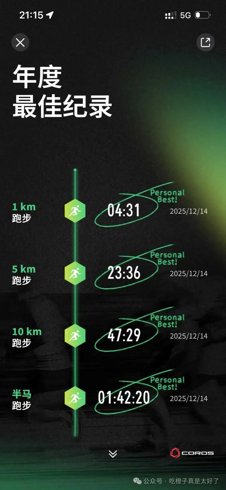

当我在跑步的时候，我在想些什么<<2025年度跑步总结
跑步最难的不是坚持，而是迈出第一步。当你不再需要理由去跑，跑步就成了一种存在方式。 慢慢跑，直到你喜欢跑步为止。Slow is fast.
背景：一年多过去，跑步给了我很多馈赠，我想将它写出来。
我一直以为村上春树那本书叫《当我跑步的时候，我在想些什么》，实际上却是《当我谈跑步时，我谈些什么》。这本书大概是我看过最有用的跑步指导书——没跑步之前看，跑了一段时间看，现在还看。所以，我写的所有跑步相关文章，都用这个名字：当我在跑步的时候，我在想些什么。

01 · Running
享受阳光是人生一大美事，感谢跑步让我重获这份喜悦
02 · Running
喜欢一个人跑，大概也只想一个人跑
03 · Running
我不是孤僻和冷漠，我只是一个INTJ
04 · Running
跑过凌晨、白天、黑夜，跑过雨天，酷暑，凛冬，跑过异地他乡，跑过来时的路，跑过过往的路，如此看来，未来只会更加未知。
05 · Running
高驰pace是我买过最喜欢的运动装备
06 · Running
26年目标：半马130或者回归健康跑，减少参赛，在泥土地上跑，雪地里跑。
07 · Running
颜色：跑者大多喜欢亮色，我也不例外，可是，颜色的改变慢慢发生了，不在追求视觉上的亮丽，而是一种黑色，有次跑马中，看到一位女生穿着on的黑灰，特别耐看，由此对于颜色发生了转换，追求的是暗黑dark。If you konw you will know
08 · Running
决策，跑步耳机我只选择自带内存的骨传导，以上两个条件是必须的，带内存好处在于，提前会将需要听的内容预设好，在开跑的时候，减少无关决策；这项策略极大的帮助了我，跑步最难的是迈出去的第一步，核心目标是跑步，通过有效的策略来减少目标外围非重要问题的大脑决策，对无关决策的应用我有时也会应用到生活中；优酷用来打发时间，bilibili用来学习，通过预设的分类，在选择时候减少脑力的思考，更像是一种本能，好了，开始打发时间，流程是这样：点开优酷APP，点开历史播放，点开第一条，开始看。这个过程没有思考，只有本能。
09 · Running
跑步喜欢听书，不喜欢听歌，听书会带来平静。听过的作者有，罗翔、王德峰、王东岳、蒋勋、傅佩荣。
10 · Running
之前我无法说出要跑步的原因，现在我可以说出喜爱跑步的原因：自行车是对人腿部的延伸，我们渴望更快；羽毛球拍是对手部的延伸，我们渴望伸的更远；而跑步是对人体完全的掌控，所有一切都只是靠原始的身体，全身的运动。当然游泳也是全身运动，但最重要的是，跑步是人天生的技能，自从猿人直立之后，而游泳需要学习。还有一些重要的原因，随时随地，一个人，蹬双鞋就可以跑了。
11 · Running
我跑过100次的10公里，101次依然很痛苦。
12 · Running
要我总结跑步技巧，一个字跑，两个字慢跑，一段话：慢慢跑，直到你喜欢跑步为止。
13 · Running
冥想，一直对于冥想渴求，从未成功过，没有刻意的追求，在跑步中反而有时会达到这种状态：【人类在重复性肢体动作中容易进入冥想状态，这种群体性律动构成了一种非宗教的世俗修行】。重复、平静，这些都是重要的外在特征。
14 · Running
我正缓慢而深沉地呼吸以召唤跑步，突然间，可以说，我的嘴与某个巨大的外部肺（空气）相连，它呼唤着我的呼吸并迫使其返回，片刻前我所渴望的某种呼吸节奏，此刻成为了我的存在本身，而此前作为象征的跑步，突然转变为一种情境。（改编，在冬天寒冷的空气侵入肺部，通过内在循环，吹入到空气中，冷冽的空气过肺，我想到了这一句话）
15 · Running
健身房，成了我额外的一个选择，天气不好，状态不好，时不时来健身房跑步机上跑，人也多，热热闹闹，换换口味，给自己多一个跑步选择，也挺好。
16 · Running
跑多快才算快？第一场参赛10公里6分37秒配速，那时渴望进入5分，第一次半马配速进入5分配速，那时渴望进入4分开头，半马配速进入4字开头，难道还要更快？一直有一个问题萦绕着我，跑多快才算快？
17 · Running
坚持跑步，是我见过最奇怪的词组。 每次看到这个词组，我都忍不住要笑起来（无嘲讽，只是心态上转变想到了以前的自己）。 就好像坚持吃饭一样。 想象一下，有个人，一本正经地跟你说： 我们要学会坚持吃饭。
18 · Running
筋疲力尽，燃尽了，这些词语，在12月中的一场半马赛事中彻底的领会了，如果不跑马拉松，我这一生也不会体会到什么叫 筋疲力尽
19 · Running
跑步伤膝盖，还是不伤？在我想来，过度训练和过度不训练，都会伤到身体。道理古人早有说明，阴阳不在两极，而在平衡。
20 · Running
我经历的跑步历程大概是，不理解，痛苦，难受到有一点适应，到开始习惯，开始适应，到疯狂，买装备参赛过度跑量，到厌跑一个月，到回归科学训练，目前开始有规律的，通过间歇、长距离、阈值跑、有氧、休息搭配，分配每周时间。跑的快不快，对我没以前重要。
21 · Running
一切皆有可能，一年多前，有人告诉我，我会喜欢跑步，我肯定当成这个人疯了，我这辈子都不可能会喜欢跑步，我有很多种理由解释我为什么跑不了；我可以说，我腿短，一跑步难受头晕等等。现在回过头来看，这个跑步过程，正是对【一切皆有可能】的实践。
22 · Running
十公里，如果要说什么是跑步的潘多拉魔盒，我首选10公里这个数字的达成，一口气完成第一次的10km，大概一个人会彻底喜欢上跑步；读大学时，运动会有1万米的项目，当时我是想，谁能跑这么多，1万是个什么概念，这个数字好吓人，我接受不了。现在10公里，一万米对我只是个训练单位。我多么想回到过去，大声给同学吆喝一声，一万米让我来。
23 · Running
跑步让我没有了体重焦虑，几乎没有。
24 · Running
跑步能戒烟，真的。
25 · Running
回想那些跑过中的天启时刻，我毫不犹豫的会选择，第一次迈出脚的那一天；24年6月份，没有记录具体时间，具体配速，具体距离。一个夏天，带着耳机，穿着短袖，没有速干衣（那时不懂），我就这样出发了，跑了大概有1-2公里，我已经想不起来我有多痛苦，我到底是怎么想的，我是如何决策出这一步，我是如何想到要去跑步，但是第二天全身酸痛影响深刻，甚至差点感冒。
26 · Running
第一次半马，穿的一双回力运动鞋，现在看来根本不是跑步鞋，就这样跑了下来，2小时过一点完赛。
27 · Running
less is more，买过很多装备，也扔了很多，踩过很多坑，现在有了自己的购物方式：少买一点，买好一点，穿久一点。这样挺好，多未必佳。
28 · Running
帽子，盘点了一下买过的跑步装备，每个环节基本都有心仪的选择，除了帽子，很喜欢帽子，买过试戴过不少帽子，没有一个适合头型，我一度怀疑是不是不适合帽子。我一直在等属于我的帽子where is my lovely hat.
29 · Running
早起，很早之前有过一段时间，想刻意早起，甚至看过书，看过课程，都没有做到。跑步之后，没有刻意去早起，但在实际上却无意识达到了每天早起，无为而无不为。我之前一直没有找到早起的秘诀，现在我有一个答案：早起，难点不在于如何早早起来，而是回答这个问题，早起之后要干什么？这个问题有了答案，早起自然解决了，我的答案是跑步。所以，早起是个伪问题，不是真问题，真正的问题是：早起之后干什么？
30 · Running
我想要跑步，我想要这种话，我有过很多次，以前我想要，总有个外在的力量推我到这里。只有跑步，没有任何人，没有任何外在力量，我也没有什么理由，只是我想要。
俗到极致即为雅，雅得过头便是俗——是谓雅俗共赏。